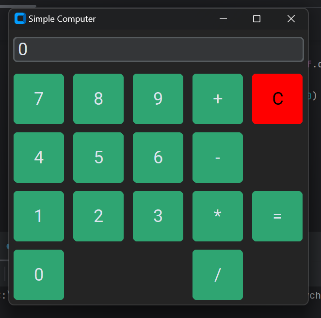

始めに
今回は、Python の GUI（グラフィカルユーザインターフェイス）アプリを作成できる Tkinter のデザインがダサい（古い）ので、む～ってなってた私に、神の手が差し伸べられ、カッコいい Tkinter アプリを作成することが可能になったので、その方法をここに書き留めさせていただきます。
うぇ～い♪
今回は、Qiita に出ていた記事を参考にして、カッコいい Tkinter アプリを作成しました！
（追記：今日は、GASを使用して登録している YouTube チャンネルのその日に投稿された動画をメールで送るっていうやつを作成していたのですが、API の利用制限回数を超えてしまってプログラムの実行ができなくなったので、こっち書いているのです。（ははｈ）
機能
Tkinter をカッコよく作っていくためには、"CustomTkinter" を使用します！！
こいつが超いいやつなのです。（CustomTkinter のオフィシャルサイト）
git リポジトリの README では次のように説明されています：
CustomTkinter は、Tkinter に基づく Python UI ライブラリであり、新しい最新の完全にカスタマイズ可能なウィジェットを提供します。 これらは通常の Tkinter ウィジェットと同様に作成および使用され、通常の Tkinter 要素と組み合わせて使用することもできます。 ウィジェットとウィンドウの色は、システムの外観または手動で設定されたモード (「ライト」、「ダーク」) に適応し、すべての CustomTkinter ウィジェットとウィンドウは HighDPI スケーリング (Windows、macOS) をサポートします。 CustomTkinter を使用すると、すべてのデスクトップ プラットフォーム (Windows、macOS、Linux) で一貫した最新の外観が得られます。
・・・おわかりいただけただろうか？
はい、☝は言ってみたかっただけやねん。
一先ず、CustomTkinter は、tkinter アプリのデザインを最新のものに、一貫性のあるものにするよ～ということでしょうな・・・たぶん。うん。素晴らしい！こんなこと書くよりさっさと作っていきたいですね！
でぁやっていきましょう！
Anaconda Prompt たるものが存在するので、そこで、
pip3 install customtkinter
と、入力、Enter します！
で、customtkinter がインストールされますので、さっそくコーディングしていきます。
・・・
コーディング完了しました。
最終的なアプリの外見はこんな感じ：

まぁまぁそれなりに良きではないでしょうか？
デザインも最新のものっぽいですし、一貫性があって非常にユーザにとって扱いやすそうですね。
アプリ
最後に
今回は、CustomTkinter を使用して、Tkinter アプリを作成してみました！
普通の Tkinter アプリと比較するとこんな感じ：

まったく受ける印象が違いますよね！！
今比較してみて、自分でもとてもびっくりしています・・・いや、恐ろしぃ・・・
すばらしぃ！
そして、今回の新たな気づきは「state="readonly"」についてですね。どうやらこう設定して Entry を作成すると、その後はプログラム側でも操作ができないらしい（自分がやってみた場合はね）一体どういう利用方法をするのでしょうか？・・・まぁいっか
という感じです。
Python の Tkinter でアプリ開発をすることはそんなありませんが、今後、ちょっといろんなことをこれでやっていけたらと考えています（Python のコードは .exe（実行ファイル）化できますしね！）
あ～でもなんだかんだご飯食べた後からやってたら、今はもう天辺まわちゃってますね～
楽しいからぜんぜんいいんですけど
まぁただ学生の本業である課題も何も手つけてないのに明日（もう今日ですね）課題提出締め切りですしね・・・
おやすみなさいです。